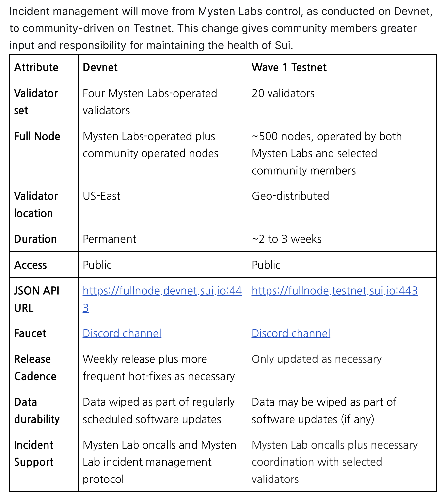
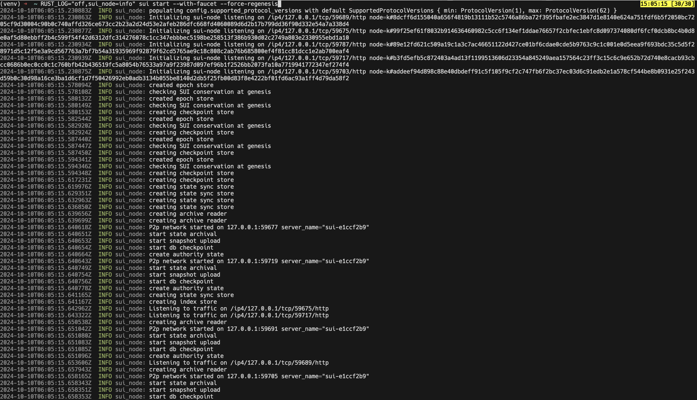
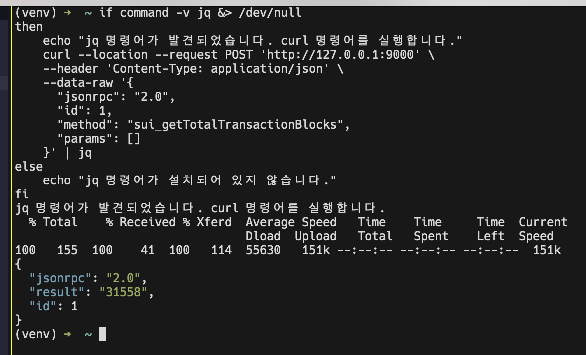
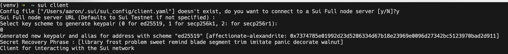
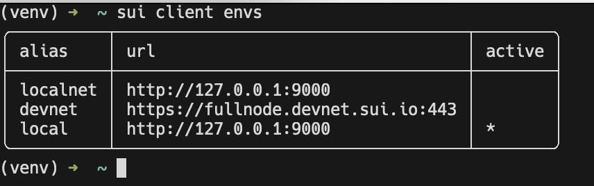
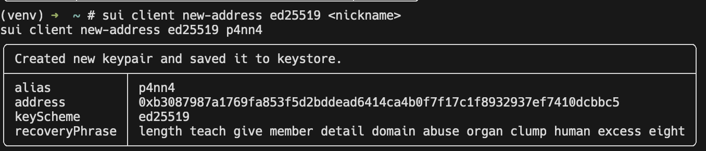
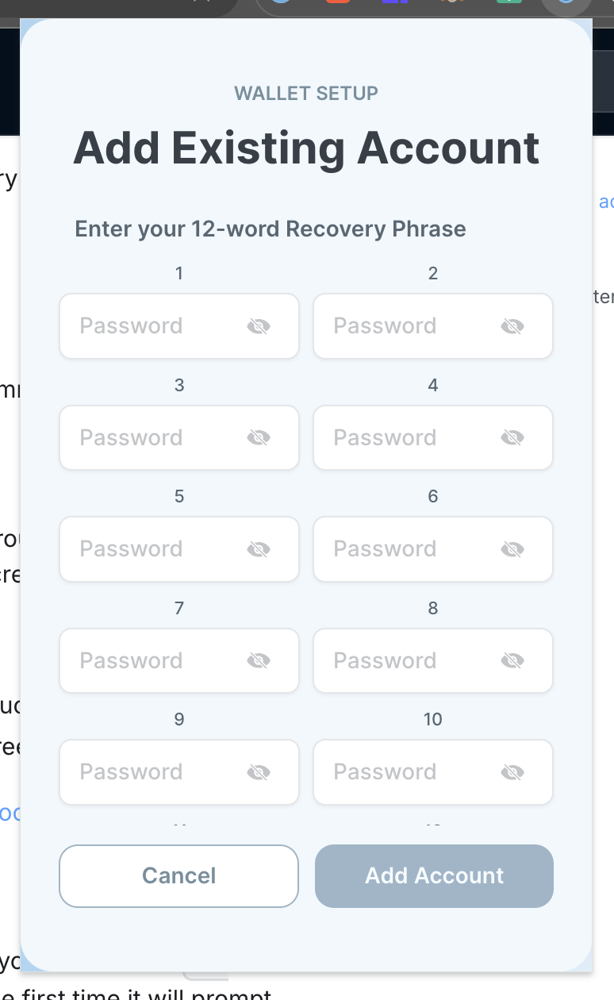
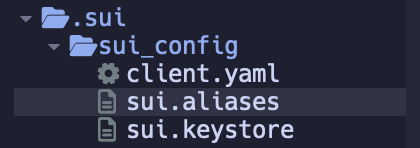
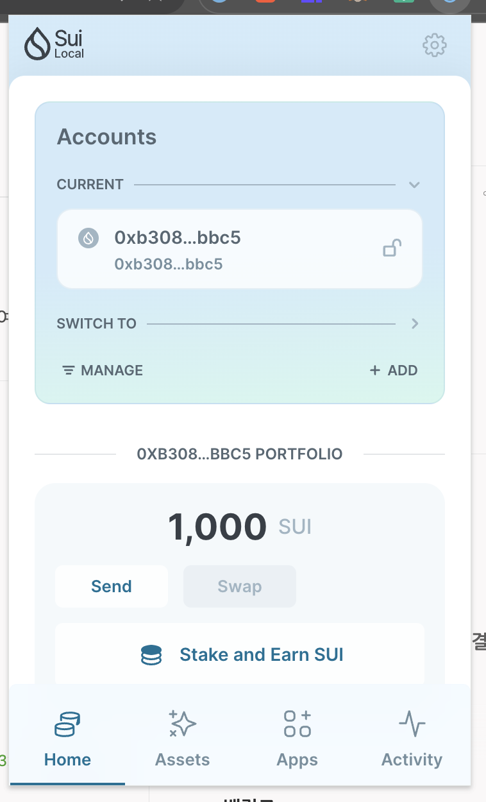

Docs 읽고 한글로 정리해두려고 합니다…
TL;DR
- Tool, Sui 설치
- Localnet 구동
sui startwith options (faucet,regensis)
- Localnet <> CLI 연결
sui client <env>
- Localnet Account 생성
sui client <address>
- Localnet Faucet으로 토큰 확보
- send request using curl command
1. Sui 설치
맥북이면 brew로 해도 되고, Rust가 설치되어 있으면 cargo로 해도 됩니다…
저는 Cargo 로 설치했습니다.
brew install suicargo install --locked --git https://github.com/MystenLabs/sui.git --branch testnet sui
rustup update stable2. network 구동
참고로 Sui는 Devnet, Testnet 이렇게 두 개로 나눠지길래 뭔가 싶었는데…  blog.sui.io/sui-testnet-wave-1 에서 그렇다고 합니다…
요약하면 Devnet은 Mysten Labs이 주도적으로 돌리고 있고, Testnet은 20 validators가 돌리고 있고의 차이…
여기서는 Localnet 돌리는 것만 정리합니다.
위에서 sui 가 제대로 설치됐다면 아래 스크립트를 입력해서 로컬넷을 시작할 수 있습니다.
RUST_LOG="off,sui_node=info" sui start --with-faucet --force-regenesis실행 결과는 아래와 같습니다.

옵션은 docs에서도 잘 설명하고 있지만.. 대략 아래와 같습니다.
RUST_LOG:sui_node=info정보를 제외하고는 다 무시한다는 뜻, warning 같은거 안띄워서 깔끔--with-faucet: faucet 기능도 함께 시작--force-regenesis: 상태를 완전 재시작, 이전 상태나 이후 상태와 완전 독립적인 로컬 네트워크 시작
즉, 로컬넷의 상태를 계속 유지하면서 개발을 하든… 뭔가 하고 싶으면 --force-regensis만 제거하고 위 스크립트를 실행하면 됩니다.
2-1. 로컬넷 확인
제대로 돌아가는지 확인하는건 curl로 request를 하나 보내보면 됩니다.
if command -v jq &> /dev/null
then
echo "jq 명령어가 발견되었습니다. curl 명령어를 실행합니다."
curl --location --request POST 'http://127.0.0.1:9000' \
--header 'Content-Type: application/json' \
--data-raw '{
"jsonrpc": "2.0",
"id": 1,
"method": "sui_getTotalTransactionBlocks",
"params": []
}' | jq
else
echo "jq 명령어가 설치되어 있지 않습니다."
fi아래와 같이 확인할 수 있습니다.

3. 네트워크(로컬넷)에 Sui CLI 연결
Sui CLI를 처음 사용할 때 config file 을 만들게 됩니다.

위와 같이 sui client를 입력하고 y, <ENTER>, 0 해주면 됩니다.
아래 스크립트를 입력해 로컬넷을 사용하도록 설정합니다.
sui client new-env --alias local --rpc http://127.0.0.1:9000옵션에 대한 설명은 다음과 같습니다.
sui client new-env: 새로운 네트워크 환경을 등록합니다.--alias local:local이라는 이름으로 새로운 환경을 등록합니다.--rpc http://127.0.0.1:9000: rpc endpoint 정보를 등록합니다.
즉, local이라는 이름으로 http://127.0.0.1:9000 인 로컬넷 환경을 새로 하나 만드는 명령어입니다.
새로 생성한 환경으로 switch 해줍니다.
sui client switch --env local참고로 여기서 사용한 switch는 --env 뿐만 아니라 --address도 가능합니다.
자세한 사항은 sui client switch --help로 확인할 수 있습니다.
sui client envs위 명령어를 입력하면 현재 저장된 환경들을 모두 확인할 수 있습니다.

4. Active address 확인하기
그냥 주어진 address 를 사용해도 되지만, 기왕이면 직접 만든 address를 사용해보는게 좋다고 생각합니다.
# sui client new-address ed25519 <nickname>
sui client new-address ed25519 p4nn4
위 recoveryPhrase를 이용해 wallet extension에서도 계정을 import 해올 수 있습니다 (물론 localnet으로 변경해주셔야 합니다…)

참고로 계정에 관한 정보는 앞서 생성한 config file 위치에 가면 확인할 수 있습니다.
보통 홈 디렉토리 (~/)에 .sui 폴더로 존재합니다.

5. Faucet 으로 토큰 얻기
앞서 로컬넷을 실행할 때 --with-faucet 옵션을 넣었으므로 간단히 아래 스크립트를 입력하여 토큰을 받아 올 수 있습니다.
# curl --location --request POST 'http://127.0.0.1:9123/gas' \
# --header 'Content-Type: application/json' \
# --data-raw '{
# "FixedAmountRequest": {
# "recipient": "<YOUR SUI ADDRESS>"
# }
# }'
curl --location --request POST 'http://127.0.0.1:9123/gas' \
--header 'Content-Type: application/json' \
--data-raw '{
"FixedAmountRequest": {
"recipient": "0xb3087987a1769fa853f5d2bddead6414ca4b0f7f17c1f8932937ef7410dcbbc5"
}
}'
1,000 sui 를 받아왔습니다…
이 정도 하면 개발 환경 구축은 된 것 같습니다.
다음은 move언어를 이용해 smart contract에 해당하는 프로그램 개발을 다뤄봅니다.